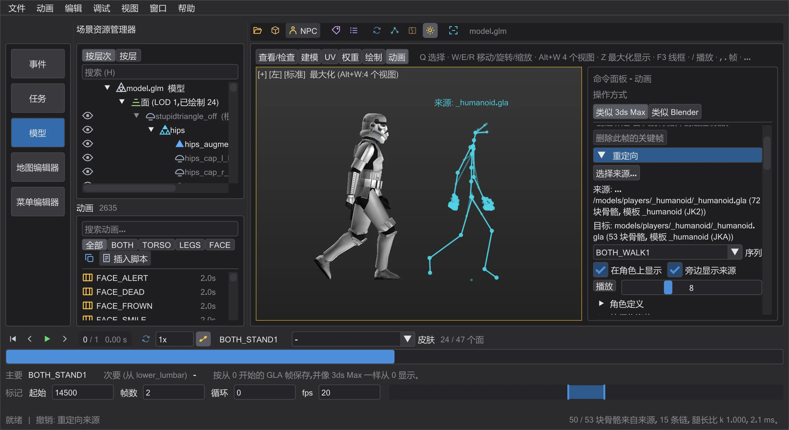
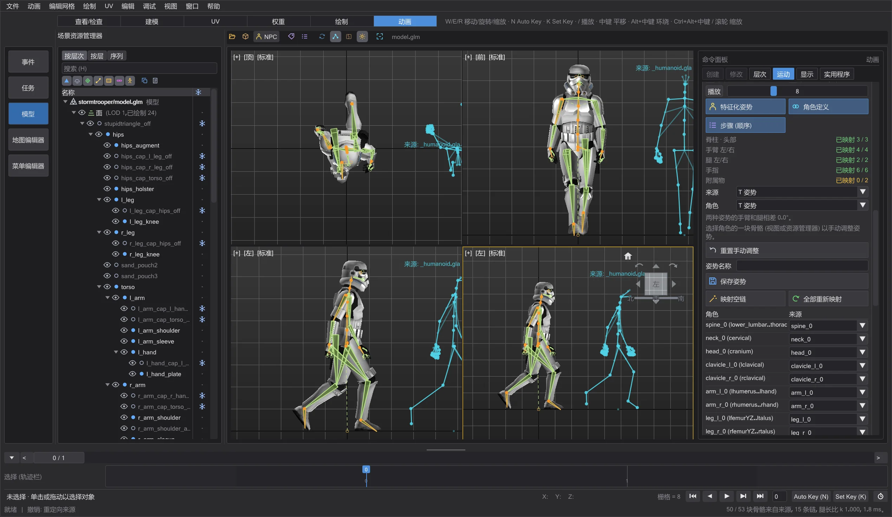
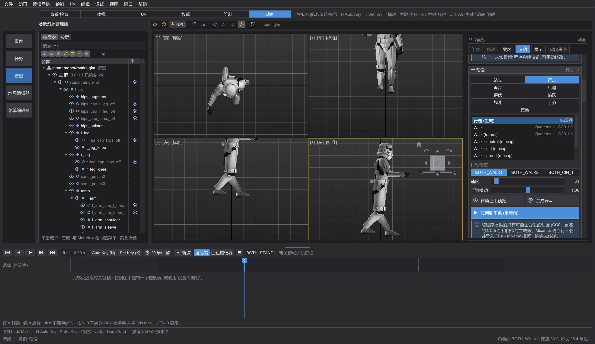

模型选项卡: 重定向
让你的角色获得另一个骨架的动画 - JK2 到 JKA、JKA 到 Movie Duels 角色、人的步行到生物或自己的绑定 - 姿势相同、链条对应、步幅缩放、脚踏实地, 结果烘焙到你选择的 GLA。
选择来源#
在模型选项卡中打开角色, 进入 Animation 区域。在命令面板的 重定向 卷展栏 (自动物理下方)、菜单 Animation > 重定向、视图右键 (Control Rig > 重定向) 或搜索 (X, Blender 模式为 F3) 中选择 选择来源: 游戏数据中的任意 GLA 或磁盘上的 .gla。然后选择来源的 序列 (其 animation.cfg 中的一行)。重定向 立即在角色上显示结果, 并在旁边以骨架显示来源; 播放 同时播放两者。角色显示按游戏方式压缩 (compressBone) 的结果: 所见即游戏所播放。

链条与绑定模板#
两个骨架都用链条描述 - 脊柱、颈、头、锁骨、手臂 (上臂、前臂、手)、腿 (大腿、小腿、脚、脚趾)、手指和附属物。3ds Max 模式下表格称为 角色定义 (与 MotionBuilder 相同), Blender 模式下称为 骨骼映射。已知骨架会用模板填充: JKA _humanoid (53 块骨骼)、JK2 _humanoid (72)、基础游戏的 34 个自有骨架 (rancor、wampa、AT-ST、howler、tauntaun、礼仪机器人及其他, 按文件名和骨骼名识别), 以及来自其他软件的 HumanIK/Mixamo (mixamorig:...)、3ds Max Biped 和 CAT。其他骨架由骨骼识别建议链条。同名链条相互对应; 骨骼数不同时按链长分布, 手指按编号。任何一行都可手动更改 (标记 *); 映射空链 保留你的行。扭转骨 (lhumerusX、lradiusX、lfemurX) 分担前臂或大腿的旋转; 挂在前臂下的手指和光剑挂点随手移动。不附带 Mixamo 文件 - 请用自己的账号下载, 模板会映射它们。
共同姿势#
传递前, 来源和角色必须处于同一姿势 (3ds Max 模式为 特征化姿势, Blender 模式为 静止姿势) - 否则手臂和腿会扭曲。JKA 骨架为 A 姿势 (上臂约向下 48°), 其他绑定常为 T 姿势。T 姿势 和 A 姿势 将脊柱和颈部竖直, 手臂侧平或向下 45°, 腿竖直向下, 每个肢体以最小旋转。卷展栏显示两个姿势还相差多少。用 X/Y/Z ±5 按钮微调角色的骨骼, 以名称保存这组姿势, 以后再用。
骨盆、FK、IK、根#
步骤按列表顺序执行, 与 Unreal 相同: 骨盆 像来源一样移动骨盆, 按 k = 角色腿长 / 来源腿长缩放 - 腿越长步子越大, 脚不打滑; FK 链 使每块骨骼相对共同姿势像其来源骨骼一样旋转, 长度保持角色自己的; IK 手/脚 将手脚拉到来源缩放后的位置 (脚 Reach 和 手 Reach 从 0 = 仅 FK 到 1 = 完全到达, 如 HumanIK 的 Reach); 保持脚的接触 在来源的脚站立时让脚停在落地处; 根运动 像来源一样移动 model_root 和 Motion 并缩放。用箭头调整步骤顺序。手动设定 k 可得到不同步幅。

检查与烘焙#
卷展栏在步骤下方测量结果: 脚打滑 是脚站立期间最大的水平移动 (游戏单位), 旁边是来源的同一数值 (缩放后); 柱状图逐帧显示。跳变 是角色骨骼旋转或移动远大于其来源的帧 - 点击帧号即可查看。绘制到槽位 (Blender 模式为 烘焙到槽位) 按游戏方式以来源 animation.cfg 的 fps 压缩各帧, 放到一个 槽位 (BOTH_WALK1、BOTH_CIN_3 ...)。然后在 GLA 与槽位 中生成地图 GLA (过场, BOTH_CIN_1...)、你的模组的 _humanoid.gla 或自己的 GLA - 带新骨架的自有 GLA 仅单人模式加载。关闭预览后, 角色自己的动画及其烘焙 GLA 与之前逐字节相同。
预设: 步行与跑步生成器#
预设 卷展栏 (也在菜单 Animation > 预设 和搜索中) 用我们自己的生成器制作步行和跑步循环, 因此没有许可问题: 选择 类别 和 姿态 (普通、沉重、潜行、受伤、拔出光剑), 设置 速度 (游戏 NPC 步行 90、跑步 300 单位/秒)、步长 (从角色自己的 BOTH_WALK1 / BOTH_RUN1 测得) 以及手臂摆动、髋部摆动和抬脚, 然后 应用到角色。循环立即在角色上播放; 支撑脚精确贴地, 并像游戏中的步行一样匀速向后滑动 (由游戏移动角色), 循环无缝衔接, 在两脚都需着地处骨盆下沉。像重定向的动画一样烘焙到 BOTH_WALK1 或 BOTH_RUN1 槽位。其他作者的库暂未附带: Quaternius Universal Animation Library (CC0) 和 100STYLE 数据集 (Ian Mason, CC BY 4.0) 需要导入其文件格式 (glTF/FBX 与 BVH) - 见版本说明。
